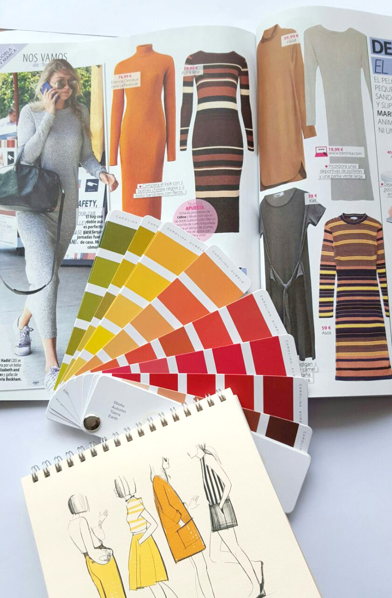
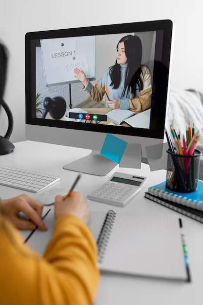
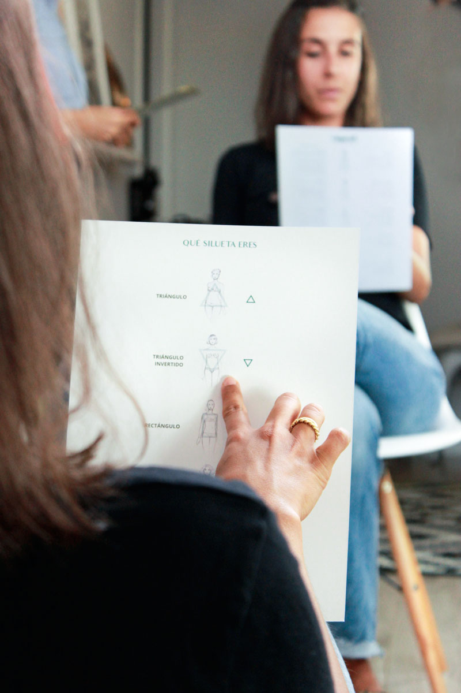
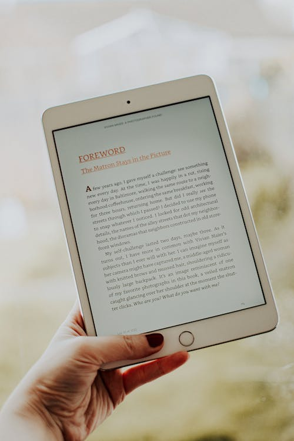
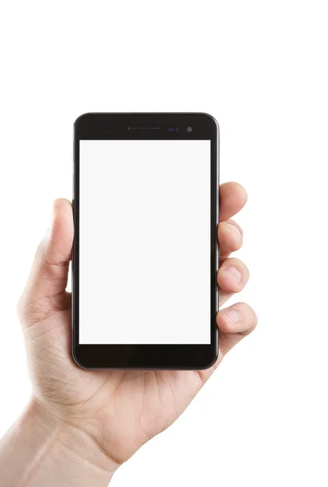

(502) 5513-5773
(502) 5513-5773

Conozca la asesoria de imagen y estilo
María Grande Asesoria y Estilo tiene un propósito: hacer que nuestros clientes desarrollen su imagen personal a partir de un trabajo profundo analizando quiénes son y cómo quieren ser vistos por el mundo. A partir de esta conexión con ellos mismos y alineación de expectativas, somos capaces de hacer un trabajo de 360 grados ofreciendo servicios de asesoría de imagen y mucho más. ¿Sabías que la imagen que proyectamos dice mucho de nosotros antes incluso de hablar? La asesoría de imagen y estilo se trata precisamente de eso: ayudarte a comunicar quién eres a través de tu apariencia. No se trata solo de ropa o maquillaje, sino de cómo tu estilo refleja tu personalidad, tus valores y lo que quieres transmitir a los demás. Un asesor de imagen no solo te ayuda a elegir prendas que te favorezcan, sino que también trabaja contigo para descubrir cuál es tu estilo único. Esto puede incluir recomendaciones sobre cortes de cabello, colores que te favorecen, cómo combinar ropa y hasta cómo mejorar tu postura y actitud frente a los demás. Además, la asesoría de imagen es muy útil en diversos aspectos de la vida, como entrevistas de trabajo, eventos sociales, o incluso en el día a día. Un estilo bien cuidado puede darte más confianza y hacerte sentir mejor contigo mismo. Por ejemplo, si te sientes un poco perdido a la hora de combinar prendas o no sabes qué tipo de ropa te hace sentir más cómodo, un asesor puede guiarte para que encuentres lo que más te favorezca y te permita expresarte de manera auténtica. Y lo mejor de todo es que no tienes que cambiar quién eres, sino resaltar lo mejor de ti. En resumen, la asesoría de imagen y estilo no es solo una cuestión de apariencia, es una herramienta poderosa para potenciar tu confianza, tu bienestar y cómo los demás te perciben. Así que, si estás pensando en darle un cambio a tu estilo o simplemente necesitas un poco de orientación, un buen asesor puede marcar la diferencia. La asesoría de imagen y estilo es un servicio especializado que busca ayudar a las personas a proyectar su mejor versión a través de su apariencia. Esta disciplina no solo se enfoca en la moda, sino también en cómo los colores, las prendas y los accesorios pueden influir en la percepción de los demás, reflejando la personalidad, los valores y los objetivos de quien los usa. Un asesor de imagen trabaja en diversos aspectos, como la elección de ropa adecuada para el tipo de cuerpo de cada persona, el estilo de vida y las ocasiones específicas, como eventos formales o casuales. Además, analiza la paleta de colores que favorece a cada individuo, tomando en cuenta su tono de piel, cabello y ojos. El estilo personal es una extensión de la identidad, por lo que la asesoría no busca imponer tendencias, sino ayudar a cada persona a encontrar lo que mejor refleja su carácter y le hace sentir cómodo y seguro. Este servicio también puede incluir recomendaciones sobre cortes de cabello, maquillaje y lenguaje corporal, creando una imagen integral que se alinee con los objetivos personales o profesionales. En resumen, la asesoría de imagen y estilo no solo se trata de seguir las modas, sino de construir una imagen auténtica que empodere a la persona, haciéndola sentirse más segura y proyectando confianza en cualquier situación.




